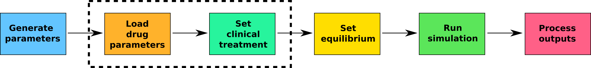

Introduction
Now that we know how to set up and run basic simulations using
malariasimulation, we can start to think about how we build
interventions into our simulations and visualise how they affect malaria
transmission dynamics. One such intervention is clinical treatment, or
case management, in which individuals that get a clinical case of
malaria are treated with an antimalarial drug.
To simulate clinical treatment in malariasimulation, there are six steps:

- Load the base set of malariasimulation parameters
(
get_parameters()) - Load parameters for the drug(s) of choice into our list of model
parameters (
set_drugs()) - Specify the clinical treatment coverage for each drug through time
(
set_clinical_treatment()) - Tune the parameters to the equilibrial state
(
set_equilibrium()) - Run the simulation (
run_simulation()) - Process the simulation outputs
Using these six steps, we can simulate clinical treatment regimes that span from the very simple (single drug at a single coverage level through time) to the quite complex (multiple drugs with time-varying coverages).
2. Loading antimalarial drug parameters
As we saw earlier, the first step when using malariasimulation is to
load a set of parameters using get_parameters():
# Establish a list of malariasimulation parameters:
parameters <- get_parameters(overrides = list(human_population = 1000))The second step is to load the parameters for the drug(s) we want to
simulate into our list of parameters. The malariasimulation
package has in-built parameter sets for 3 drugs:
- Artemether lumefantrine (
AL_params) - Dihydroartemisinin piperaquine (
DHA_PQP_params) - Sulfadoxine pyrimethamine (
SP_AQ_params)
We can view these parameter sets by simply calling them. Here are the parameters for artemether lumefantrine:
# View the artemether lumefantrine (AL) parameter set:
AL_paramsThe parameters in these sets are:
- drug_efficacy: probability that treatment with the drug successfully clears the infection
- drug_rel_c: The onward infectiousness of a treated individual to a mosquito relative to an untreated individual
- drug_prophylaxis_shape: Shape parameter for a Weibull distribution describing an individuals prophylactic protection over time following treatment
- drug_prophylaxis_scale: Scale parameter for a Weibull distribution describing an individuals prophylactic protection over time following treatment
In the code chunk below, view the parameter sets for DHA-PQP and SP-AQ:
# View the parameters for DHA-PQP and SP-AQ:## [1] 0.90 0.32 4.30 38.10The shape and scale parameters govern the strength and duration of the prophylactic protection provided by the drug.

Looking at the plot above, answer the following question:
## [1] 0.90 0.32 4.30 38.10To simulate the use of a drug in malariasimulation, we
load them into the parameters list. This is done using the
set_drugs() function. Note that the drug parameters
(e.g. AL_params) must be passed to get_drugs()
as a list.
# Establish a list of malariasimulation parameters:
parameters <- get_parameters()
# Load the parameters for artemether lumefantrine into the parameters
parameters <- set_drugs(parameters = parameters, drugs = list(AL_params))
# View the parameters for AL:
parameters$drug_efficacyThe final line of the chunk above shows us how we can view the drug
parameters currently loaded the parameters list once they have been
appended. When simulating interventions that use antimalarial drugs
(e.g. clinical treatment), this can provide a useful check to ensure you
have loaded the drug parameters correctly. In the chunk below, view the
drug_rel_c parameter:
# Establish a list of malariasimulation parameters:
parameters <- get_parameters()
# Load the parameters for artemether lumefantrine into the parameters list:
parameters <- set_drugs(parameters = parameters, drugs = list(DHA_PQP_params))
# View the drug_rel_c parameter for DHA-PQP:3. Setting clinical treatment
Now that we know how to load antimalarial drug parameters we can
specify how they will be administered to the population. In
malariasimulation, we parameterise clinical treatment using the
set_clinical_treatment() function (run
?set_clinical_treatment() to view the help file for the
function). set_clinical_treatment() requires four
arguments:
parameters: A list ofmalariasimulationparameters (with parameters for drug(s) loaded usingset_drugs())drug: The indices of the drug which we are parameterising clinical treatment fortimesteps: A vector of timesteps on which we want to update clinical treatment coveragecoverages: A vector of clinical treatment coverages (proportion of the clinical infections that will be treated in each timestep).
Note that we need to call set_clinical_treatment() for
each drug that we are specifying clinical treatment for, and that the
timesteps and coverage inputs need to be
vectors of equal length, such that each update to the coverage has a
corresponding timestep on which the update should take place. The
following chunk shows how to set up and run a simulation with clinical
treatment:
# Establish a list of malariasimulation parameters:
parameters <- get_parameters(overrides = list(human_population = 1000))
# Load the parameters for artemether lumefantrine into the parameters
parameters <- set_drugs(parameters = parameters, drugs = list(AL_params))
# Specify a clinical treatment regime for artemether lumefantrine:
parameters <- set_clinical_treatment(parameters = parameters, drug = 1, timesteps = c(0, (1 * 365) + 1), coverages = c(0, 0.6))
# Tune the parameter set to an initial EIR:
parameters <- set_equilibrium(parameters = parameters, init_EIR = 8)
# Run the simulation:
clinical_treatment_simulation <- run_simulation(timesteps = 3 * 365, parameters = parameters)
# Plot the prevalence through time:
clinical_treatment_simulation |>
ggplot(aes(x = timestep, y = n_detect_730_3650/n_730_3650)) +
geom_line(colour = "deepskyblue2", linewidth = 1.2) +
theme_bw() +
labs(x = "Time (days)", y = "Prevalence (2-10)")+
scale_y_continuous(limits = c(0, 1), expand = c(0, 0)) +
scale_x_continuous(expand = c(0, 0)) +
geom_vline(xintercept = (1 * 365) + 1, linetype = "dashed")4: Putting it all together
Awesome, that’s all of the basics for running
malariasimulation simulations with clinical treatment. For
the final exercise, I want you to run two simulations to look at the
effect of clinical treatment on malaria transmission dynamics.
The first simulation is a baseline scenario with the following criteria:
human_populationsize of 10000- Equilibrate the parameters to an initial EIR of 8 (refer the “introduction” tutorial if you need to!)
- Run the simulation for 5 years
The second simulation will use what we’ve learnt to simulate clinical treatment with the following criteria:
- Set the
human_populationparameter to 10000 - Load the parameters for dihydroartemisinin piperaquine (DHA-PQP)
- Initiate clinical treatment with a coverage of 0.4 at the end of year 1
- Increase the coverage to 0.8 at the end of the third year
- Equilibrate the simulations with an initial EIR of 8
- Run the simulation for 5 years
Plot the PfPR2-10 for each simulation and compare the outputs!